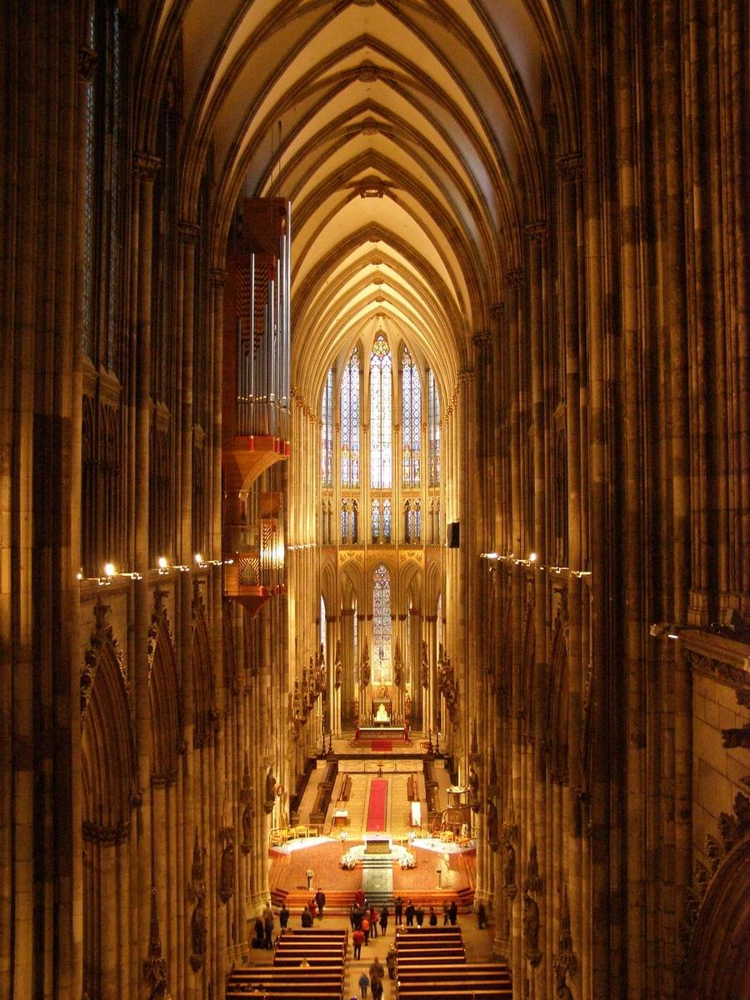
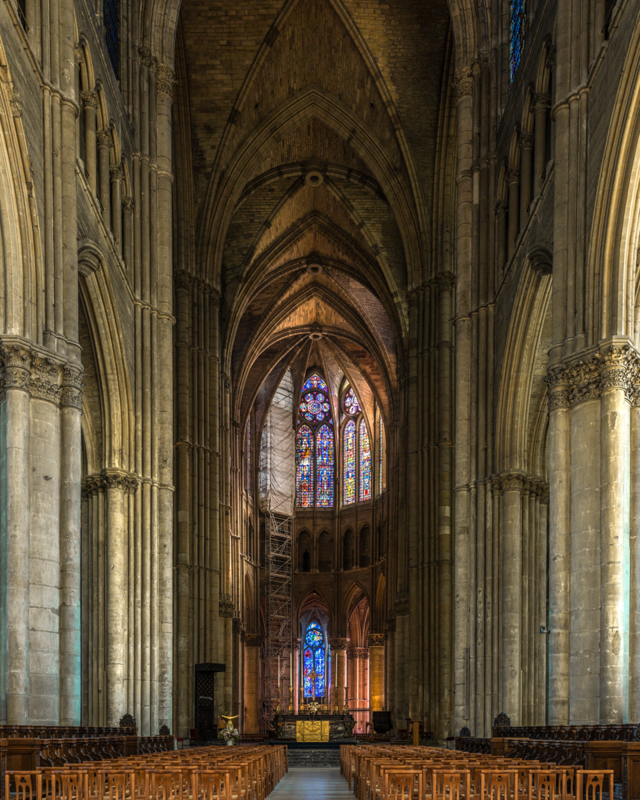

The Abbey Church of Saint-Denis was constructed from 1144 to 1281 under Abbot Suger. It is known to be the birthplace of Gothic architecture. It's notable for its early use of ribbed vaults and large stained glass windows fill the space with colored light, and it used to serve as the burial site for French monarchs. On its west facade, featured on the tympanum under the entrance it displays a depiction of the last judgement, and seated directly below are the two amazing bronze cast doors with imagery from christs passion.Outside
Image from
saint-denis-basilique.frInside
Image from
soundlandscapes.wordpress.comWest Facade Tympanum
Image from
ai.stanford.eduWest Facade Bronze Doors
Image from
sah.org
Wells Cathedral
Wells, England
The Wells Cathedral was constructed from 1220 to 1240, it exemplifies English Gothic architecture differing from the French style with its denser details and less verticality. The cathedral interior features a distinctive scissor arch, which was introduced after cracks started forming on the interior.Outside
Image from
nationalchurchestrust.orgInside
Image from
nationalchurchestrust.orgScissor Arches
Image from
commons.wikimedia.org
Strasbourg Cathedral
Strasbourg, France
The Strasbourg Cathedral was constructed during the 13th and 14th centuries. It is known for its red/brown sandstone exterior and detailed facade. It also features an astronomical clock.Outside
Image from
wikipedia.orgInside
Image from
commons.wikimedia.orgAstronomical Clock
Image from
wikimedia.org
Cologne Cathedral
Cologne, Germany
The Cologne Cathedral, began construction in 1248 and was not completed until 1880. Its notable features being its intricate towers and that it houses the Shrine of the Three Kings.Outside
Image from
wikipedia.orgInside

Image from
helvar.comShrine of The Three Kings
Image from
reliquarian.com
Reims Cathedral
Reims, France
Reims Cathedral, constructed in the 13th century. It is notable for its large rose window, sculptures, and its role in the coronation of French monarchs. It is also home to the iconic "smiling angel".Outside
Image from
wikipedia.orgInside

Image from
frenchmoments.euRose Window
Image from
solosophie.comSmiling Angel Statue
Image from
ncregister.com
Chartres Cathedral
Chartres, France
The Chartres Cathedral, constructed and added to from 1134 to 1513. It is identified by its many stained glass windows in the apse. And combined with the advances in supporting heavy cielings, gives the impression that the ceiling is almost floating. It also features a labyrinth decoration that is a popular pilgrimage destination.Outside
Image from
worldhistory.orgInside
Image from
partisantruebeauty.wordpress.comApse
Image from
thehistorycorner.orgLabyrinth
Image from
praywithjillatchartres.com
York Minster
York, England
York Minster, constructed between the 13th and 15th centuries. Its style leans more towards english gothic architecture, as we can see in its heavyset appearance. Its nave features a choirce vaulted ceiling with ornate golden decoration.Outside
Image from
britannica.comInside
Image from
commons.wikimedia.orgChoir Vault
Image from
flickr.com